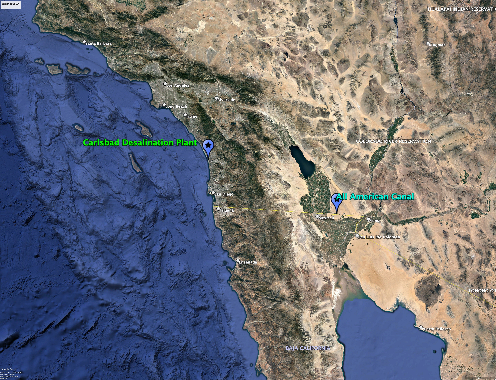
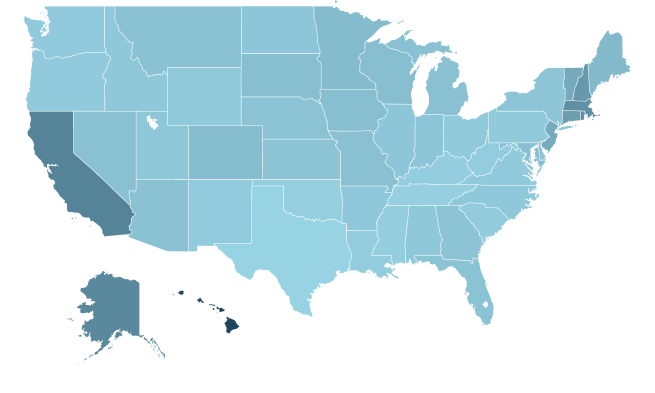
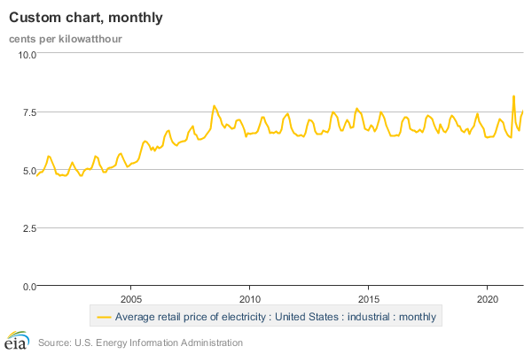

I’m Jonathan Burbaum, and this is Healing Earth with Technology: a weekly, Science-based, subscriber-supported serial. In this serial, I offer a peek behind the headlines of science, focusing (at least in the beginning) on climate change/global warming/decarbonization. I welcome comments, contributions, and discussions, particularly those that follow Deming’s caveat , “In God we trust. All others, bring data.” The subliminal objective is to open the scientific process to a broader audience so that readers can discover their own truth, not based on innuendo or ad hominem attributions but instead based on hard data and critical thought.
You can read Healing for free, and you can reach me directly by replying to this email. If someone forwarded you this email, they’re asking you to sign up. You can do that by clicking here .
If you really want to help spread the word, then pay for the otherwise free subscription. I use any fees to increase readership through Facebook and LinkedIn ads.
Today’s read: 13 minutes.
Since expressing personal opinions leads trolls to raise personal criticisms, let me begin this one with a brief biographical history rather than a passage from a famous author. You should know where I’m coming from.
I was born in Olean, in western New York State, in 1959, during the waning months of the Eisenhower administration. During Ike’s presidency, he created three entities that have impacted my life and the lives of countless Americans: ARPA (the Defense Department’s Advanced Research Projects Agency, now DARPA), NASA (formed in response to the Soviet threat of Sputnik), and the Interstate Highway system. So, I grew up watching the Apollo program on TV while inhabiting a Cold War world of fallout shelters and the social and political unrest of the 1960s. Then, as I was approaching my sixteenth birthday (with my driver’s license in sight), the 1974-1975 OPEC embargo hit, with its lines of cars waiting for scarce fuel. The global energy market was affecting my life from half a world away. Consequently, I became fascinated by alternative energy technologies and expected that NASA-style technology efforts would change the world.
As an undergraduate at Rensselaer Polytechnic Institute, 1 I studied chemistry with an affinity toward organic chemistry (essentially, the chemistry of carbon—‘organic’ chemistry and ‘organic’ food have different connotations!) To understand this slice of science in a larger context, I wanted to explore applied thermodynamics (the science of energy conversions), particularly in the arcane field of mechanistic enzymology (the science of biochemical transformations). It’s not essential to appreciate the nuances of such specialized fields—I use them to point out that the theme of energy began early in my scientific career.
I advanced this theme with graduate work in the Department of Chemistry at Harvard. There, I first became fully aware of the most impactful enzyme in the natural world, RuBisCO (shorthand for the scientific mouthful, ribulose-1,5-bisphosphate carboxylase-oxygenase). RuBisCO is the central enzyme involved in carbon fixation during photosynthesis, and it is abundant, comprising about 3% of the total mass of leaves. On Earth, there are around 700 million metric tons of RuBisCO. 2 RuBisCO enables life as we know it on Earth, but it is abundant precisely because it is not very efficient (at least in enzyme terms).
After my doctoral studies, I realized that the pure pursuit of knowledge in academic research was not for me—I wanted to see ideas put into practice. So, I spent my early career working in corporate R&D, specifically in pharmaceutical discovery tools. I began my journey at Merck Research Laboratories, followed by increasing responsibility at a string of biotechnology companies. In each role, I bridged the gap between the physical sciences and engineering. Ultimately, this career path led me to an independent consulting role, focusing on technology business development in San Diego. I added an MBA to my list of academic degrees, graduating in 2009 from the Rady School of Management at UCSD. My return to formal education created an opportunity to reset my career, and I rediscovered “energy” as a core interest, just as oil prices were reemerging as a national concern. After graduation, I extended a business trip to Washington, DC, to attend a conference specifically dedicated to new technologies in energy. Fatefully, this conference was the inaugural ARPA-E Summit.
Begun during the Bush 43 administration, ARPA-E represents a bipartisan national aspiration that a technology-first approach to energy problems could be as impactful as the technology-first approach to defense problems advanced by DARPA. DARPA is the poster child for government investments in technology development, with notches in its belt like the Internet (birthed as ARPANet in the late ‘60s), Global Positioning Satellites (GPS), and the radar avoiding technology that underlies stealth aircraft, along with several top-secret advances. But, in the infinite wisdom of Washington, although ARPA-E was aimed squarely at retaining American competitiveness, it was born a zombie. Congress created it in 2005 but then excluded it from the budget. Fortunately, there was a call for “shovel-ready” projects in the wake of the 2008 Great Recession—ARPA-E was ready, a vehicle to put the $800-odd billion “Recovery Act” to work. Then-Secretary of Energy (and Nobel laureate) Dr. Steven Chu, long an advocate for federal investment in energy technologies, secured $400 M (only 0.05% of DOE’s budget!) to launch ARPA-E. The 2010 ARPA-E Summit was its debutante ball, and I had stumbled into it.
ARPA-E recruited me (or, perhaps more accurately, I asked for an interview) as a Program Director in the wake of the Summit. My interview was scheduled at ARPA-E’s offices in Washington, DC, on April 15, 2010. This date is memorable for a couple of reasons. First, of course, it’s “Tax Day”, a day that most American taxpayers dread. Second, it was the final stop on a “Tea Party” bus tour to protest the government, starting from then-Senate Majority Leader Harry Reid’s hometown, Searchlight, Nevada. It was a beautiful spring day, and I had an afternoon break in my interview schedule, so I decided to go for a walk on the National Mall. As I approached the Washington Monument, I saw the Tea Party banners and the TV cameras, but I noticed another feature: Port-a-potties. Here were people protesting the government in its hometown, and our government’s concern was, “But, will they have a place to pee?”
I thought to myself, “What a great country! What other government on Earth would consciously and actively support dissent?” That was the moment I decided to take the role if offered. Despite the cameras’ attention directed toward the protesters, I also noticed that they were vastly outnumbered by school tour groups, in matching T-shirts, from schools across the country. As I continued walking, I flashed back to my own school trip to the National Mall, probably around 1970. During that visit, I clearly remember a young woman in bellbottoms and a “Jews for Jesus” T-shirt, running against pedestrian traffic while screaming at the top of her lungs, “Nazi litterer!” This angry appeal targeted an unlikely fascist, probably just a careless tourist who dropped a candy wrapper. I’ve learned two lessons. First, political speech, whether anti-establishment or pro-environment, is often extreme and irrational. It has some pretty deep and passionate roots in our country. Second, while organized protests attract news coverage, most organized protests are irrelevant to ordinary citizens. It’s much more important to teach our children (and sometimes ourselves) how our system works.
I started my Federal Service at ARPA-E that August and immediately began to investigate the quantitative link between the use of energy by green plants and their virtue of absorbing carbon dioxide from the atmosphere, in full view of the limitations of biochemistry. It was a natural fit. This deep dive formed the basis for my first program, aptly named “Plants Engineered To Replace Oil”, or PETRO for short. This experience, along with five years’ worth of exposure to energy in all its glorious forms, formed the foundation for this serial. I won’t detail the program’s achievements, but PETRO ran from 2011 until 2017 and expanded the philosophical justification for subsequent ARPA-E programs at the intersection of agriculture and energy. Unfortunately, while I am proud of PETRO’s impact, it did not reach its lofty goal during my tenure, but it continues through its successors both inside and outside the Federal sphere.
I left the agency and government service in 2015. In my spare time, I’ve continued to muse about potential solutions to climate change. Our global speed bump, known as the “COVID-19 Pandemic,” gave me time to reflect and solidify my thinking. I began with the question, “How can we most efficiently optimize the impact of technologies aimed at “solving” climate change?” I realized that our shotgun approach to the problem was falling short. Collectively, we are misdirecting technology based on the unrealistic expectation that if we stop adding to the problem, Nature will let us off the hook. It won’t. We can’t afford a do-over, and there’s a lot of self-serving noise on both “sides” out there, so I started to write down a few ideas from a purely data-driven, science-focused viewpoint.
The story continues…
Let’s reiterate what the problem is and how possible solutions are constrained. Stated concisely:
-
The increase in carbon dioxide levels in the atmosphere, attributable to human extraction and combustion of geologic carbon over 350 years of industrialization, threatens to destabilize Earth’s climates.
Let’s now summarize our progress to a plausible solution.
-
To solve this problem, we must reduce the quantity of already-emitted carbon dioxide, not simply reduce the rate of its increase by “decarbonization”.
-
To remove carbon dioxide from the air using any direct engineering approach is prohibitively expensive, even if only the cost of energy is included.
-
Photosynthesis is the only process that creates economic value from carbon dioxide because it uses (free) sunlight as its energy source.
-
Increasing Earth’s capacity for photosynthesis is a serious geoengineering challenge. The most direct approach is to produce irrigation water from ocean water—Earth has enough of both land and water so that any system can scale.
-
The energy required for the process must also come from carbon-free sources. Our only plausible choice is nuclear energy, and we need to hit a cost target of less than $300 per acre-foot of irrigation water.
Now, we know the only technological solution to the primary factor involved in modifying Earth’s climates, rising carbon dioxide in the atmosphere. It is a rifle shot at a clear target. [Naturally, the word “only” will challenge other technologists to conceive of alternative solutions. This provocation is intentional. But if you’re rising to the bait, remember the problem’s constraints: You’re only allowed to use current, proven technologies that can scale globally. And show your work—Don’t just toss out an unsupported idea. I’ve thought about this a lot , and I expect you to do the same!]
I firmly believe that we can solve the techno-economic problem of producing low-cost irrigation water from the ocean. Furthermore, we can use that water in concert with Nature to suck carbon dioxide out of the air by increasing terrestrial photosynthesis. Once it’s proven regionally, then the solution can scale globally to stabilize our atmosphere.
To be entirely clear, I’m not suggesting that humanity should abandon other avenues for reducing emissions—it will take time for us to stabilize the atmosphere, and such efforts can buy time if they can scale quickly. However, we can’t expect them to constitute a solution without implementing technologies that reverse past emissions.
To recap, the solution must:
-
Use carbon-free (nuclear) energy for desalination to avoid making the problem worse, and
-
Be profitable at $300 per acre-foot, delivered to otherwise arid land.
It helps to have a concrete use case for the technology, as well, so let’s return to Southern California:

I’ve highlighted two features. First, there’s the Carlsbad desalination plant , the largest desalination plant in the Western hemisphere. Second, only about 100 miles to the east is the All American Canal , which diverts fresh water from the Colorado River to the US side of the border, generating the green agricultural area in the middle of the desert, California’s Imperial Valley. Note how much greener the desert is on the American side of the border! [As a side note, the “lake” just to the north is “The Salton Sea”. Its water is much too salty for irrigation—it’s the remnants of a prior engineering failure caused by faulty canal construction!]
The Carlsbad plant supplies a fraction of the drinking water for San Diego. It has a faceplate capacity of 50 million gallons of drinking water per day and uses about 3.6 kWh per cubic meter of water. These numbers allow us to calculate the energy cost of an acre-foot of water produced by this plant—it takes 4.4 MWh per acre-foot, meaning that the process uses about four times the theoretical minimum energy. But, how much did that energy cost?
If you’ve ever read your electricity bill in detail (I have, but I’m a nerd), then you’ll appreciate that this is not a straightforward question. Because electric power cannot be stored at scale or transmitted over long distances, it must be generated locally to match local demand. As a result, low-cost sources are used first (generally always-on “baseload” power) followed by higher-cost sources (“peak” power). Because electric utilities are highly regulated, they can’t pass on increased costs to consumers. Instead, they have established pricing “tiers” that reflect patterns of demand. This regulation leads to market distortions, including incentives for utilities to pay consumers to avoid using their products during periods of high demand! This lack of transparency makes cost (as distinct from price) even more brutal to tease out. But it’s worth a try.
What do we know about cost? To that end, let’s examine bulk prices for industrial use of electricity as a proxy for cost. These prices vary by region:

and by season:

A few observations: First, regional differences are significant: Jurisdictions like Hawaii are expensive because they are remote and lack natural power sources. Second, jurisdictions like Washington State, New York State, and Nevada are cheap, probably because of abundant baseload hydroelectric power (the Columbia River, Niagara Falls, and Hoover Dam, respectively). Third, you can start to see the importance of nuclear: Illinois gets about half of its electricity from nuclear power, while prominent shutdowns in New England and California affect costs (the Pilgrim and San Onofre decommissioning, respectively), and this translates to higher prices. Finally, the retail, industrial rate (as close as we’ll be able to get to actual cost) can vary as much as 30-fold, although normal variation is closer to twofold.
So what does the math tell us? First, let’s use Illinois costs as a proxy for nuclear power 3 . Here, the rates vary from about $0.04 to about $0.08 per kWh. This cost translates to an energy cost of $178 to $355 per acre-foot of water. Nuclear, as baseload, will undoubtedly come in at the lower end of this range. So, at least from an energy-cost perspective, nuclear desalination can be breakeven or profitable today.
Of course, labor, maintenance, transmission, and financing will drive costs up. But, many design factors will drive down costs (a la Henry Ford) in a purpose-built system, and I’ll go into them in the next installment. The bottom line: There is a business case to be made for nuclear desalination.
Some may recoil from these facts and retreat into denial or false hope. For most of my lifetime, anti-nuclear activists have peddled nuclear energy as an environmental horror show, so such a visceral response is understandable. Take a deep breath, and understand that this induced emotional response is nearly as non-scientific as the analogs that lead some to deny global warming—this is a crisis, and we need to keep calm. The overall message is that we have to understand the trade-offs objectively if we’re going to make a rational decision. So it’s essential to examine the problem we’re looking to solve and understand the choices we’re making. In this case, to do nothing while hoping for technological salvation is a choice. To pin our future on the rain dance of decarbonization is a choice. To embrace nuclear energy because it will demonstrably solve the problem is also a choice. It can be effective.
Before the “what-abouts” start, realize that we don’t have time to look for a “better” solution because modern civilization requires energy. There is no perfect solution, the laws of thermodynamics constrain us, and we can’t wish or legislate our way out of them.
As an interesting historical aside in a modern context: The original patroon of Rensselaer, Stephen van Rensselaer, married Peggy Schuyler, Alexander Hamilton’s now well-known sister-in-law. He was also an ardent supporter of the Erie Canal, leading to RPI’s location at its easternmost terminus at Troy, New York. RPI was formed in 1824, and its graduates went on to provide the founding faculty of MIT, one of Lincoln’s “land grant” institutions.
Yinon M. Bar-On & Ron Milo, “The global mass and average rate of rubisco”, in Proceedings of the National Academy of Sciences Mar 2019, 116 (10) 4738-4743; DOI: 10.1073/pnas.1816654116
Approximately half of the electric power in Illinois comes from nuclear.